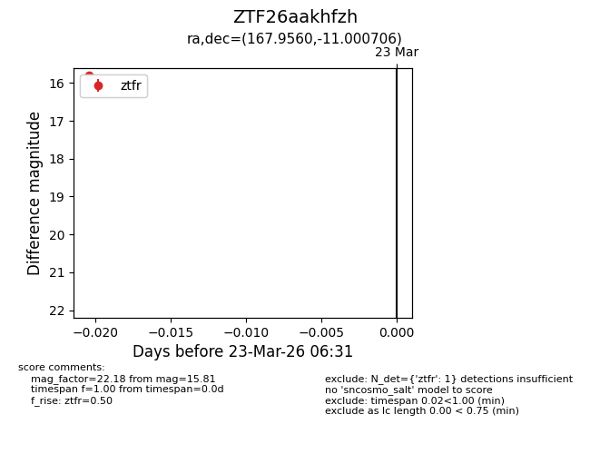
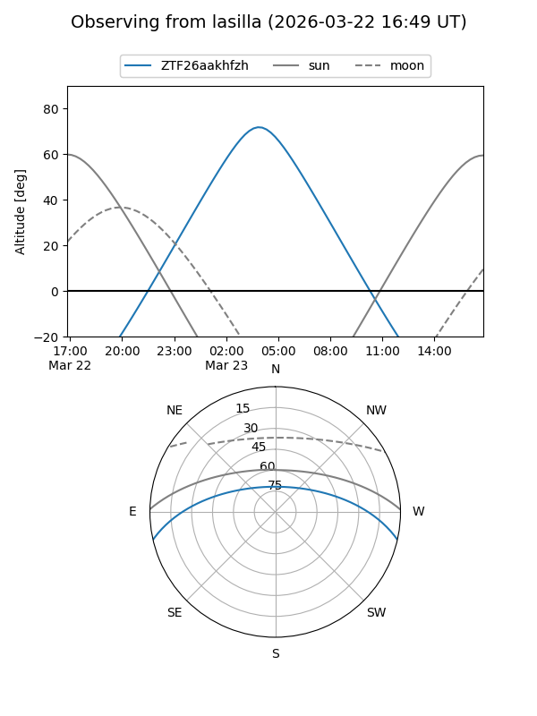
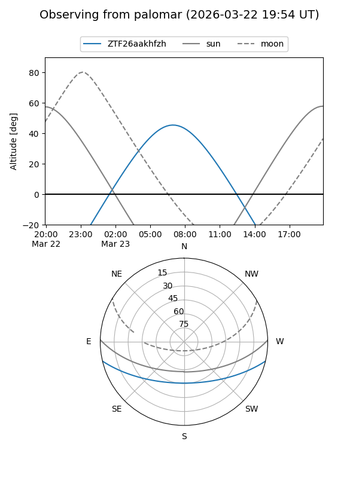

ZTF26aakhfzh
Target ZTF26aakhfzh at 2026-03-23 06:33
Aliases and brokers:
FINK: link
Lasair: link
ALeRCE: link
alt names
ZTF26aakhfzh (ztf,fink_ztf)
Coordinates:
equatorial (ra, dec) = 167.9560,-11.00071
equatorial (HMS+DMS) = 11:11:49.44,-11:00:02.54
galactic (l, b) = (267.2589,+44.86116)
Flags:
Photometry:
last ztfr=15.81
1 ztfr detections
Lightcurve

Visibility


Additional plots